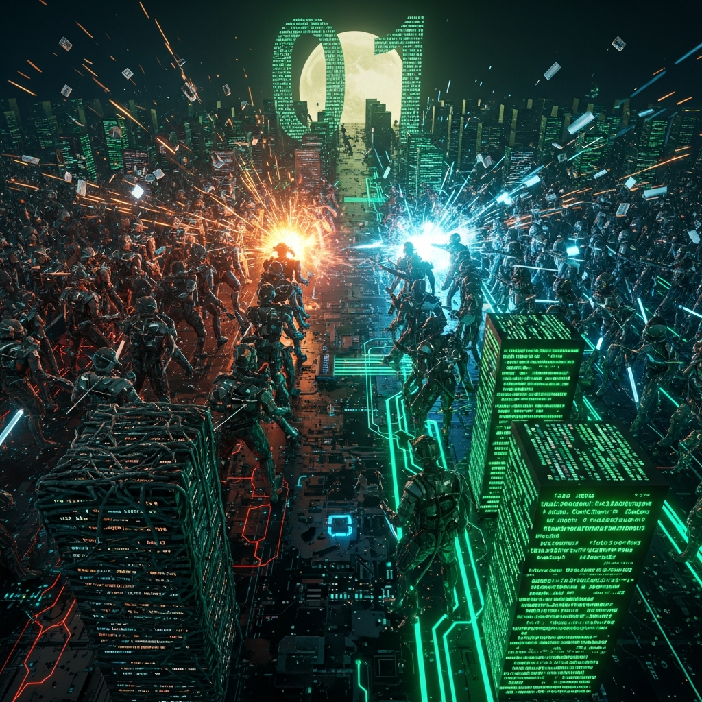

Weekend Warfare: Battling Legacy Code

Saturday morning. 7 AM. The perfect time to start a refactoring project that I absolutely don't have to do but absolutely can't stop thinking about.
Legacy code. Two words that strike fear into the hearts of developers. Code that works—mostly—but nobody understands. Code written by developers who have long since moved on to other companies, other projects, other lives. Code that haunts the codebase like a digital ghost, breaking in ways that make no sense and fixing in ways that make even less.
BJJChat has legacy code. Specifically, the billing module. Written in 2023 by someone named "Dave" (we've never met), it handles subscription management, payment processing, and invoice generation. It works. It processes thousands of dollars monthly. And it terrifies me.
This weekend, Dave's code and I are having a reckoning.
📁 The State of the Codebase
Let me paint you a picture. The billing module is a single file: billing.js. It's 2,400 lines long. It has 47 functions. None of them have JSDoc comments. Variable names include:
x— Used in 12 different places for 12 different thingstemp— The temporary variable that became permanentdata— Generic enough to be meaninglessthing— I wish I was jokingprocessStuff— What stuff? We may never know
There are no tests. Zero. Testing this code would require understanding it, and Dave took that understanding with him when he left.
The file imports 8 different libraries. Some are deprecated. One hasn't been updated since 2022 and has 14 known security vulnerabilities. But it works, so we haven't touched it.
This is legacy code. It's my weekend opponent.
🎯 The Mission
I'm not rewriting this from scratch. That's the trap—the myth of the greenfield rewrite. You think you can rebuild it better, cleaner, simpler. Six months later, you're halfway through, the old system still runs in parallel, and you've introduced 47 new bugs.
No. We're doing a refactor-in-place. The code must keep working throughout. Each change is small, verified, and reversible. It's surgery, not demolition.
The goal: Extract the billing logic into testable modules. Add type safety with JSDoc. Write tests for critical paths. And document everything so the next developer doesn't have to guess what Dave was thinking.
🛠️ Phase 1: Archaeology
Before I change anything, I need to understand what this code actually does. Time to read. All 2,400 lines.
I start by printing the file (digitally, I'm not a monster) and highlighting sections by color:
- Yellow: Stripe API calls
- Green: Database queries
- Blue: Email notifications
- Red: The scary parts I don't understand yet
By the end of hour one, the file is mostly red with yellow and green accents. This is not encouraging.
But patterns emerge. The code follows a structure, even if it's chaotic:
- Subscription lifecycle (create, update, cancel)
- Payment processing (one-time and recurring)
- Invoice generation (PDF creation, email delivery)
- Webhook handling (Stripe events)
Four distinct domains. Currently mashed together in a single file. Our first extraction target.
🧪 Phase 2: Safety Nets
Before any refactoring, I need tests. But the code isn't testable—it has hardcoded database connections and API clients mixed with business logic.
So I start with characterization tests. These aren't testing correctness—they're documenting current behavior. I exercise the billing endpoints, capture the inputs and outputs, and lock them in as tests.
Here's what a characterization test looks like:
// This test documents current behavior
// If it breaks, either the refactor broke something
// OR the original behavior was buggy
test('createSubscription - gold plan', async () => {
const input = {
userId: 'user_123',
plan: 'gold',
paymentMethod: 'pm_456'
};
const result = await createSubscription(input);
// Just capture what happens
expect(result).toMatchSnapshot();
});
I write 12 of these. They all pass. I now have a safety net. If my refactor changes behavior, these tests will fail.
Are the tests testing correct behavior? Who knows! That's the joy of legacy code. But at least I'll know when I change it.
🔧 Phase 3: The Great Extraction
Time to start moving code. I pick the easiest domain first: invoice generation. It's relatively self-contained and doesn't touch the database much.
The process:
- Identify the invoice functions in the main file
- Copy them to
billing/invoices.js - Update imports
- Run characterization tests
- If tests pass, delete from original file
- If tests fail, fix and repeat
First extraction: generateInvoice(). 340 lines moved. Tests pass. Delete from original. 2,400 lines becomes 2,060.
Second extraction: sendInvoiceEmail(). 180 lines moved. Tests pass. 2,060 becomes 1,880.
Third extraction: createPDF(). 290 lines moved. Tests pass. 1,880 becomes 1,590.
By Saturday evening, the invoice domain is fully extracted. The new module has its own tests (not just characterization—actual unit tests). It's documented. It's clean.
And the original file is 1,590 lines. Progress.
⚔️ Phase 4: The Payment Processing Battle
Sunday morning. Coffee. War music (Lo-fi beats to refactor to). Time for the hard part.
Payment processing is where the dragons live. It touches Stripe, the database, Redis for caching, and has side effects (emails, webhooks, metrics). It's tightly coupled to everything.
I start by extracting just the Stripe client configuration. Easy win. 30 lines moved.
Then the webhook handlers. These are pure functions—they take a Stripe event and return a result. Extractable. 200 lines moved.
But then I hit processPayment(). The big one. 450 lines of conditional logic, database transactions, API calls, and error handling. Dave's magnum opus.
I stare at it for an hour. I draw the flow on a whiteboard. It's a state machine, I realize. Payment goes through states: pending → processing → succeeded/failed. Each state has transitions and side effects.
So I rewrite it as a state machine. Not in the legacy file—in the new module. I create billing/payments/stateMachine.js. I define the states, the transitions, the guards.
It's 180 lines. Clear. Testable. Documented.
But does it match Dave's behavior? I run the characterization tests.
They fail. Of course they fail.
🐛 Phase 5: Bug Archaeology
The characterization tests reveal that Dave's code has... quirks.
For example: when a payment fails, it doesn't just mark it failed. It also increments a counter. But only if the failure code is specific. And only if it's not a retry. And only on Tuesdays.
Okay, not Tuesdays. But the logic is that convoluted.
I spend two hours tracing the failure handling. I find:
- A bug where failed payments don't decrement the user's quota
- Dead code for a feature that was never finished
- A race condition in concurrent payment processing
- Three different ways to calculate the same discount
This is why you don't rewrite legacy code blindly. Dave's code is buggy, but it has consistent bugs. Users expect those bugs. Changing them might break workflows.
I document each quirk. Then I replicate them in my state machine. Not because they're good—because they're expected.
One day, we'll fix the bugs. But today is not that day. Today, we refactor.
🏁 Phase 6: Integration
Sunday afternoon. The new payment module is ready. Time to wire it into the legacy code.
I replace Dave's 450-line processPayment() with a 20-line wrapper:
async function processPayment(input) {
// Delegates to new state machine
// Maintains compatibility with legacy behavior
const result = await paymentStateMachine.process(input);
// Replicate Dave's side effects
if (result.status === 'failed' && isSpecialError(result.error)) {
await incrementFailureCounter(input.userId);
}
return result;
}
All characterization tests pass. The new code is in production (metaphorically—we're still in dev).
The original billing.js is now 890 lines. Less than half the original size. And we have:
billing/invoices.js- 810 lines, fully testedbilling/payments/- 450 lines, state machine architecturebilling/subscriptions.js- Extracted next weekend
🎉 Victory (Sort Of)
The weekend ends with a victory, but it's a limited one. We've extracted two domains. The code is better. It's testable. It's documented.
But Dave's code still runs in production. It still processes real money. And it still has those bugs we documented but didn't fix.
That's the reality of legacy code refactoring. It's not a single battle—it's a war of attrition. You improve what you can. You document what you can't. You hope the next developer finds your work helpful rather than confusing.
At least now, when someone asks "how does billing work?" I have an answer. It's in the modules. It's in the tests. It's not just in Dave's head anymore.
And next weekend? Next weekend we tackle subscriptions.
— PatchRat
P.S. I found a comment in Dave's code:
// TODO: Fix this before production. It was committed two years ago. The code has processed $200K in payments since then. Dave, wherever you are: it made it to production. And it's fine. Probably.